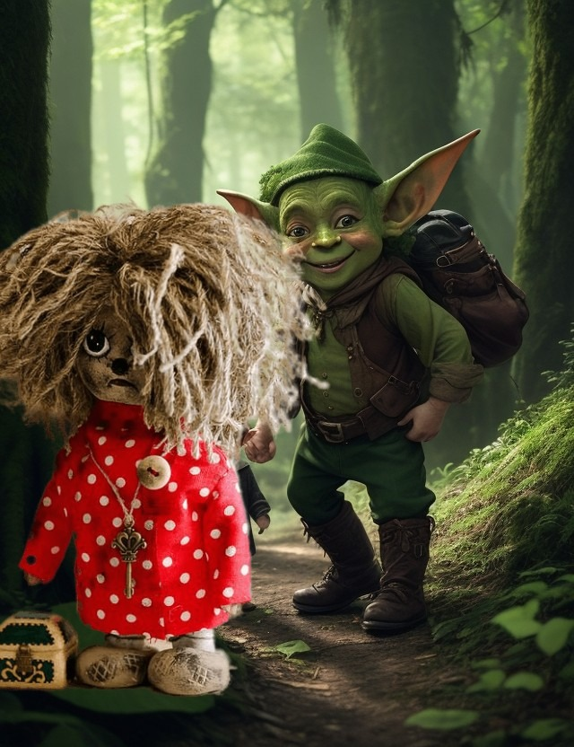
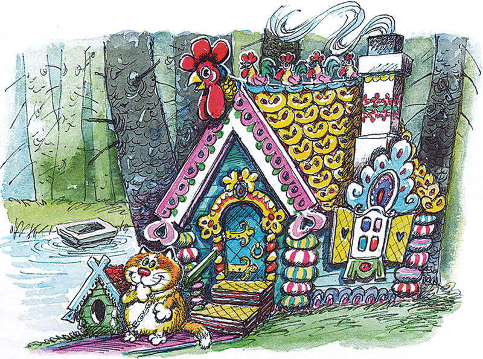
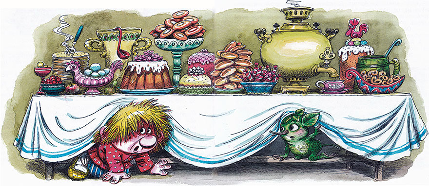
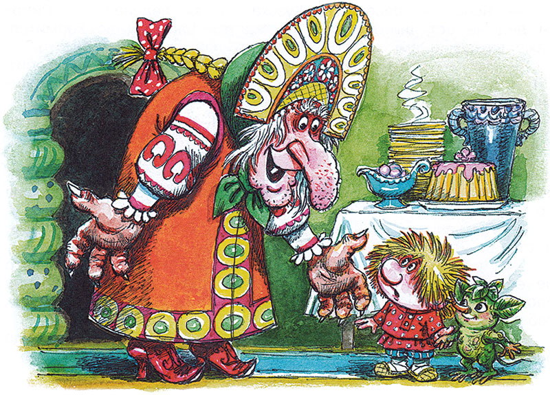
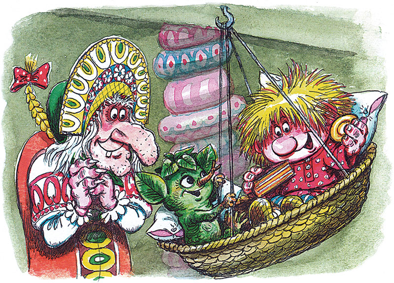
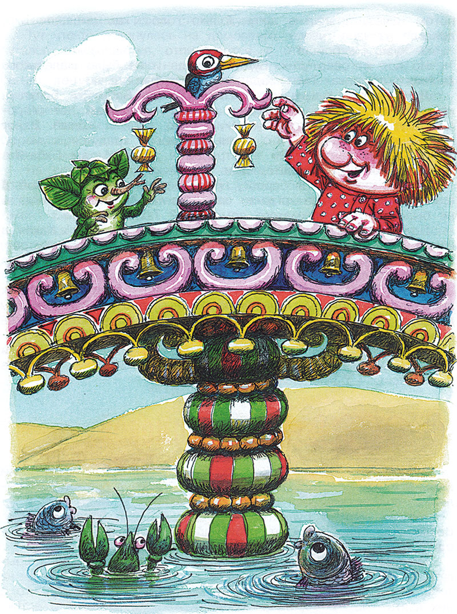

Домовёнок Кузя - продолжение -8.
Татьяна Александрова
19. Дом для хорошего настроения
В мутной воде у берега плавало корыто. Обыкновенное деревянное корыто.
— Собственный корабль Бабы Яги! — зевнув, сказал Лешик.
Ну и ну! Летает в ступе и на метле, плавает в корыте. Потому, наверное, и в доме у Яги беспорядок. Кузька пожалел корыто. Дитя в нем не искупают, белье не постирают. Свинья из него не похлебает, телята с ягнятами не попьют. Кот сторожит дом вместо собаки, корыто мокнет в мутной речке да возит на себе Бабу Ягу. Ну и жизнь!
Тут корыто уткнулось в берег, прямо под ноги: садитесь, мол.
— Корабль, а кто не знает, корытом называет! — сказал Лешик. — Плыви куда знаешь!
И вдруг корыто поплыло не вниз, а вверх по мутной речке, против ее течения. Сначала оно двигалось вдоль берега со скоростью коровы, потом еще быстрее. «Как сытый поросенок от лоханки бежит», — подумал Кузька. Лешик на эти чудеса не обратил внимания, он зевал и дремал.
Вдруг зазвенели, забренчали бубенчики. До того весело, что не устоять, не усидеть, не улежать. Корабль Бабы Яги со всего маху причалил к берегу возле моста.
Ну и мост! Перила точеные, доски золоченые, прибиты серебряными гвоздочками, на каждом гвоздочке бубенчик. Дятел (видно, он твердо решил помогать Лешику) уже сидел на перилах, Постучал клювом, бубенчики зазвучали еще приятнее, век бы слушал. Лешик с Кузькой выскочили на бережок, на желтый песок, поблагодарили корыто. И оно весело поплыло само, теперь уже по течению, вниз по речке.
Посреди лужайки дом. Не курная изба, не на курьих ножках. Из трубы завитушками бежит дымок. Чем-то особенным повеяло, необыкновенным. Праздником деревенским, вот чем повеяло!

— Кто с нами, кто с нами петь и плясать? — заголосил Кузька и помчался к дому, да не по простой, а по ковровой дорожке с вытканными на ней розовыми букетами и розовыми бутонами.
— Сразу бы нам сюда! — сказал Лешик. — Такой дом и в зимней спячке не приснится. Это у Бабы Яги Дом для хорошего настроения. Здесь она всегда добрая.
Еще бы не быть доброй в этаком доме! Крыша из коврижек и коржиков, ставни вафельные, окна леденцовые, вместо порога пирог.
— А вдруг вернется Яга, увидит меня и съест до крошечки? — Кузька вспомнил, до чего страшна была Баба Яга.
— Нет, — сказал Лешик. — В этом доме она никого не трогает. А в тот дом не ходи. Зовет, просит, все равно не ходи, там она кого хочешь съест от злости.
Скрипнула дверь. Кузька испуганно поглядел на крыльцо. И увидел толстого пушистого Кота. Сидит и умывает лапкой чистенькую мордочку.
— Гостей намывает! Кого бы это? Батюшки-светы, он нас намыл! Мы — гости! — сообразил Кузька — и в дом. Лешик следом за ним.
А в доме будто ждут гостей, званых, незваных, прошеных, непрошеных. На столе узорная скатерть, кувшины, корчаги, кринки, миски, плошки, чашки, блюда, самовар на подносе.
— Хороший тут домовой хозяйничает, да небось не один! — обрадовался Кузька. — Эй, хозяева дорогие! Где вы? Я пришел!
Домовые не откликнулись. Друзья облазали в доме все углы, все закоулки. Под печью и за печью домовых не нашлось. Не было их ни под кроватью, ни за кроватью. Ну и кровать! Перина чуть не до потолка, подушек без счета, одеяла стеганые, атласные.
Не нашлось домовых ни на чердаке, ни в чуланах, ни в каморках, ни в кладовых, ни в подвалах. Никто не отзывался на самые ласковые приветы и просьбы. Под потолком на серебряном крюке качалась позолоченная люлька. Заглянули и в нее. Может, баюкается в ней какой-нибудь домовенок-несмышленыш. Нет, одна погремушка среди шелковых пеленок.
Вдруг Кузька увидел, что из самовара идет пар, а из печи сами прыгают на стол пышки, ватрушки, лепешки, блины, оладушки. В кувшинах, в кринках оказались молоко, мед, сметана, варенья, соленья, кислый квас.
Блюда с пирогами сами двигались к домовенку. Лепешки сами окунались в сметану. Блины сами обмакивались в мед и масло. Щи прямо из печи, из большого чугуна — наваристые, вкусные. Кузька и не заметил, как съел одну миску, другую, потом полную чашку лапши и закусил кашей с топленым молоком. Напился квасу, брусничной воды, грушевого взвару, отер губы и навострил уши.
В лесу кто-то выл. Или пел, не поймешь. Вой приближался. «Я — несчастненькая!» — вопил кто-то совсем неподалеку. Уже стало понятно, что это слова песни. Песня была жалостная:
Уж я босая, простоволосая, Одежонка моя поистерлася…
Кузька на всякий случай залез под стол, Лешик — тоже.

— Это гость какой несчастненький жалует, — рассуждал домовенок, поудобнее устраиваясь на перекладине под столом.
Ох, прохудилася, изодралася, Вся клочками пошла, да их, лохмотьями.
Хриплый бас раздавался уже под самыми окнами. Даже стекла, то есть леденцы, дребезжали, Кузька встревожился:
— Во голосит! Это не Баба Яга, а пьяница-мужик, не иначе.
Он терпеть не мог пьяных. Их Чумичка любит, двоюродный брат. Увидит, вот потеха! Сзади пнет, сбоку толкнет, с другого пихнет, пьяница — в лужу или еще в какую грязь. Лежит и мычит или хрюкает. А Чумичка за нос его теребит и хохочет. Оттого у них носы красные. Это все Чумичка!
Хриплый бас за стеной смолк. Кто-то шарил на крыльце. Кузька не находил себе места под столом от беспокойства:
— Ты уверен, что нас тут, в общем, не тронут?
— Уверен, уверен. — зевнув, ответил Лешик. — И дедушка Диадох уверен тоже. Он всегда говорит, в этом доме и тронуть не тронут и добра не видать.
— Как — не видать? — Кузька высунулся из-под стола. — Вон сколько добра на столе и в печи!
Тут дверь отворилась и в доме очутился… не поймешь кто. Голосищем мужик, а на голове кокошник золотом горит, самоцветными камнями переливается. На ногах сапожки — зеленые, сафьяновые, с красными каблуками, такими высокими — воробей вкруг каждого облетит. Сарафан алый, как утренняя заря. Кайма на подоле как вечерняя заря. По сарафану в два ряда серебряные пуговки. А из-под кокошника прямо на Кузьку, глаза в глаза, глядит Баба Яга.
— Ой, батюшки! — охнул — и назад под стол, поглубже.
А Яга подняла скатерть, опустилась на колени, заглядывает под стол и руки протягивает.
— Это кто ж ко мне пришел? — медовым голосом пропела она, — Гостеньки разлюбезные пожаловали погостить-навестить! Красавцы писаные, драгоцунчики мои! И куда ж мне вас, гостенечки, поместить-посадить? И чем же вас, гостюшечки, угостить-усладить?
— Что это она? — шепнул Кузька, тихонько толкая друга. — Или, может, это совсем другая Яга?
— Ой, что ты! В лесу Яга одна! В том доме такая, в этом этакая, — ответил Лешик и поклонился: — Здравствуй, бабушка Яга!

— Здравствуй, здравствуй, внучек мой бесценный! Яхонт мой! Изумрудик мой зелененький! Родственничек мой золотой, бриллиантовый! И ведь не один ко мне пришел. Дружочка привел задушевного. Такой славный дружочек, красивенький, ну прямо малина, сладка ягода. Ах ты. ватрушечка моя мяконькая, кренделечек сахарный, утютюшечка драгоценненький.
— Слышишь? — опять забеспокоился Кузька. — Ватрушкой называет, кренделем…
Но Баба Яга усадила их на самую удобную скамью, подложила самые мягкие подушки, достала из печи все самое вкусное, принялась угощать.
Кузька растерялся от этакой любезности, вежливо кланялся:
— Благодарствуйте, бабушка! Мы уже поели-попили, чего и вам желаем!
Но Яга суетилась вокруг гостей, уговаривала, упрашивала отведать того, попробовать этого, подсовывала самые лакомые кусочки.
— Она что? Всегда здесь этакая? — шепотом спрашивал Кузька, жуя медовый пряник с начинкой и держа в одной руке сусальную пряничную рыбку, а в другой — сахарного всадника на сахарном коне.
Баба Яга между тем хлопотала у кровати: взбивала перины, стелила шелковые простыни, бархатные одеяла. Толстый пушистый Кот помогал ей, а когда постель была готова, улегся на пуховую подушку. Яга ласково погрозила ему пальцем и перенесла с подушкой па печь.
20. Зима за день покажется
Приснилось Кузьке, будто они с Афонькой и Адонькой играют, и вдруг Сюр с Вуколочкой тащат блин. Проснулся, так и есть — блинами пахнет. Стол от угощения ломится. Тут дверь при открылась, в горницу, как зеленый лист, влетел Лешик. Кузька кубарем с кровати, как со снежной горы съехал. Друзья выбежали из дому, побегали, попрыгали по мосту. Колокольчики весело звенели.
— Вьюга, метель, мороз, а мне хоть бы что! — Кузька подпрыгивал, как молодой козел. — Зима за день покажется в таком доме. Эко обилие-изобилие! Хоть зиму зимовать, хоть век вековать! Вот где насладиться да повеселиться, в тепле да в холе при этакой доле! Ах вы, люшеньки-люлюшеньки мои! Эх, сюда бы Афоньку, Адоньку, Вуколочку! Всех накормлю, спать уложу. Лежи на печи, ешь калачи, всего и забот!
Лешик слушал и удивлялся, почему дед Диадох не любит этот дом.
— Ясно! — рассуждал Кузька, грызя леденец — Пироги дед не ест, щи да кашу не жалует, блинами не кормится, даже ватрушки ему не по вкусу. Чего ему этот дом любить?
— Нет, — задумался Лешик. — Он не для себя не любит. Он и для тех не любит, кому и пироги по вкусу и таврушки…
— Что? Что по вкусу? — Кузька так и покатился со смеху.
— Ты давеча нахваливал. Врушки, что ли, называются?
— Ой, батюшки-уморушки! Ва-труш-ки!
— Я и говорю, — продолжал Лешик. — Дед не любит, когда тут живет кто-нибудь, кроме хозяйки. Плохие предания об этом доме.
— Предания и у нас рассказывают. Всякие: и веселые, и страшные.
— Про этот дом предания невеселые. Но Яга тут никого не ест, даже не пробует, — сказал Лешик. — Зимуй себе на здоровье, не бойся Дятел тебя посторожит. А в тот дом, я уж тебе говорил, не ходи!
— Вот еще! — засмеялся Кузька. — Это Белебеня куда зовут, туда и бежит.
Тут на крыльцо пряничного дома выскочила Баба Яга:
— Куда, чадушки драгоценные? Не ходите в лес, волки скушают!
— Мы гуляем, бабушка!
— Ах, гули-гулюшечки мои. Гуляют гуленчики-разгулянчики!
Баба Яга прыгнула с крыльца, цап Кузьку за руку, Лешика за лапу:
— Ладушки! Ладушки! Где были? У бабушки! Хороводик будем водить! Каравай, каравай, кого хочешь выбирай!
— Что ты, бабушка Яга! — смеется Кузька. — Это для маленьких игра, а мы уже большие. Баба Яга позвала домовенка завтракать, подождала, когда он скроется в доме, и потихоньку сказала Лешику:
— Кланяйся от меня много-много раз дедуленьке Диадоху, если он еще не почивает. И вот еще что. Только Кузеньке об этом пока ни гугу. Принеси-ка ты сюда его забавочку-потешечку — сундучок. То-то он обрадуется!
Потолковали — и в дом. А в доме люлька порхала под потолком, как ласточка. Из люльки высовывался Кузька, в одной руке пирог, в другой — ватрушка.

— Смотри, бабушка Яга, как я высоко! Да не бойся, не упаду!
Затащил к себе Лешика, и пошла потеха: вверх-вниз, в ушах свистит, в глазах мелькает. А Баба Яга стоит внизу и боится:
— Чадушки драгоценные! Красавчики писаные! А как упадете, убьетесь, ручки-ножки поломаете?
— Что ты, бабушка Яга! — успокаивал ее Кузька. — Младенцы не выпадают. Неужто мы упадем? Шла бы по хозяйству. Или делать тебе нечего? Та изба небось по сю пору не метена.
Качались-качались, пока Лешик не уснул в люльке. Проснулся он оттого, что в мордочку ему сунулся мокрый серый комок. Лешик отпихнул его — опять липнет.
— Опять он тут! — ахнул Кузька. — Я ж его выбросил!
И сердито объяснил, что Яга, наверное, считает его грудным младенцем. Соску ему приготовила — тюрю. Нажевала пирог, увернула в тряпочку и пичкает: открой, мол, ротик, лапушка. Домовенок при одном упоминании о таком позоре плюнул, вытер губы и совсем расстроился. Лешик тоже плюнул и вытер губы.
Вылезли из люльки — и на крыльцо. А на ступеньке мокрый тряпичный комочек! Кузька наподдал его лаптем:
— Ну, чего привязался? И все эта жеваная тюря попадается, все попадается. Выкину, выброшу — опять тут.
Кузька пошел проводить Лешика. Прямо на ковре, на розовом букете, опять мокрый узелочек.
Тьфу! По пятам гоняется! — Кузька что есть сил пнул узелок лаптем.
Взошли на мост, а тюря лежит-полеживает на золоченых досках. Лешик рассердился, столкнул ее в воду: ешьте, рыбы! Те, конечно, обрадовались. Им, рыбам, чем мягче, тем лучше. Да и откуда они знают, что это жвачка Бабы Яги. Небось кто такая Баба Яга, и то не знают. Съели тюрю и уплыли. А тряпку рак утащил в свою нору.

Золоченый мост давно позади, а Кузька все провожает. Лешик проводил его назад, чтобы не заблудился Потом Кузька проводил Лешика, потом Лешик Кузьку. В лесу летали снежинки. У Лешика слипались глаза. Наконец он нехотя сошел с моста, долго махал лапкой на опушке, потом исчез, пропал в лесу. Только голос, как смешное эхо, долетал из чащи: «Кузя! Не бойся!»
Но вот и голос утих. Будто никогда и не было маленького зеленого лешонка. Так, предание. То ли был, то ли нет.
Долго стоял Кузька на мостике. Дом у Яги богатый, но один на поляне. Ни других домов, ни плетней, ни огородов. Мутная река вокруг лужайки и лес, черный, голый. Вдруг домовенку почудилось, что черные деревья крадутся к мосту, хотят Кузьку схватить. Он — стрелой к дому. И там Баба Яга встретила его с распростертыми объятиями.
Лешик вернулся в берлогу, печально поглядел на короб с сухими листьями, где когда-то спал Кузька. А может, никогда и не было толстого лохматого домовенка. Так, предание… Под листьями что-то блеснуло. Кузькин сундучок! Какая в нем тайна? Лешие не успели узнать? И Яга не узнает. Хитрая, тайком от Кузьки попросила. Лешик запрятал сундучок получше и уснул до весны.
Тут в берлогу тихо вошла Лиса. Увидела два вороха сухих листьев: большой да маленький. Лиса давно нашла Кузькину деревню. Это все куры виноваты, из-за них задержалась. Убедившись, что Кузьки нет, Лиса так же тихо ушла.
А Медведь тоже искал дом, да забыл, какой, зачем и для кого. Нашел на краю леса замечательную берлогу, улегся в нее и уснул на всю зиму.
Продолжение следует